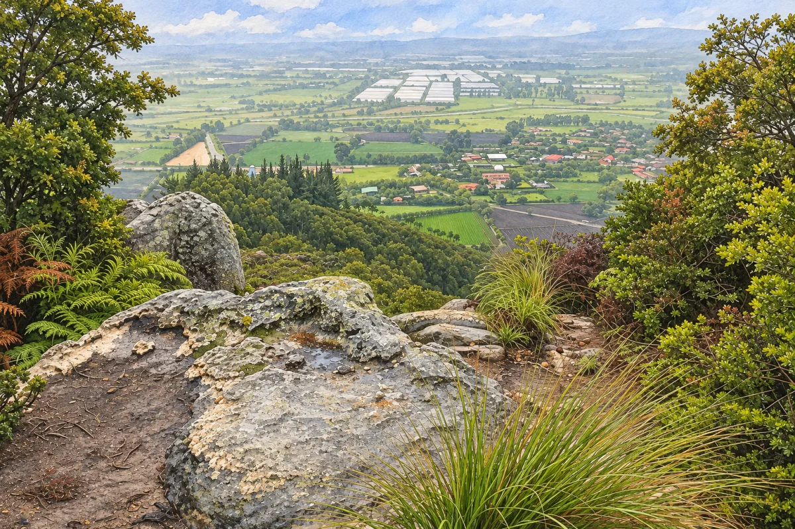

Original · Mario Andrés, junio de 2021

Generada · acuarela y gouache

WebP · 1200 × 800
Imagen aprobada el 4 de noviembre de 2026. Coordenada de la foto: 4.8048233, −74.1195667. Sustituida en el paquete versionado; todavía no desplegada en dev1.

WebP · 1200 × 800